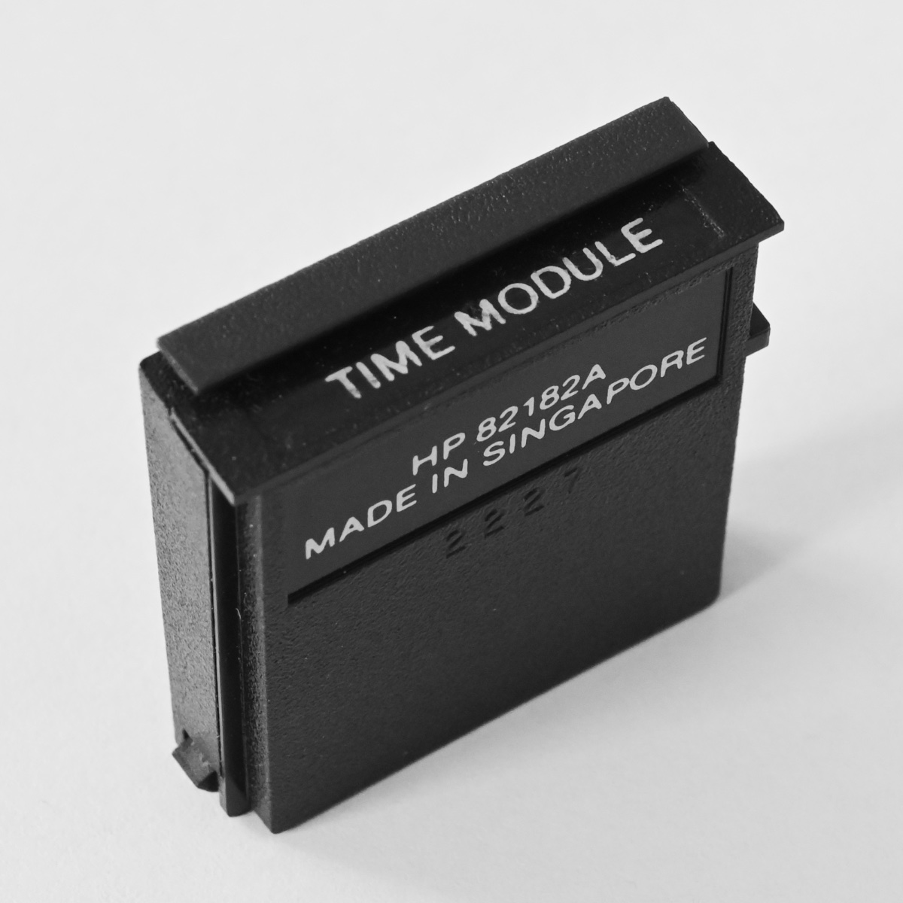

While the HP 82182A Time Module is plugged into the calculator, the
time module clock and stopwatch are available for your use. All of the
clock and stopwatch functions are programmable except where noted
otherwise.
Alarm Functions
| ALMCAT |
Lists all pending and past-due clock alarms. Pressing R/S during an ALMCAT
listing halts the calculator in ALMCAT
mode and redefines the keyboard to the following non-programmable
alarm catalog functions (the ALPHA input is
not used):
| Delete alarm |
C |
| Display: |
| Alarm Date |
D |
| Alarm Time |
T |
| Alarm Message, Label, or Function |
M |
| Alarm Repeat Interval |
R |
| Current Time |
T |
| Next Alarm and Message, Label, or
Function |
SST |
| Preceding Alarm and Message, Label, or
Function |
BST |
| Exit Alarm Catalog Mode |
← |
| Reset Alarm Using Specified Repeat
Interval |
R |
| Resume ALMCAT
Listing |
R/S |
|
| ALMNOW |
Activates the oldest past-due program or function alarm in
memory. |
| XYZALM |
Sets an alarm using the parameters in the stack and ALPHA
registers, as follows:
Stack Parameters
| Z |
Repeat Interval |
| Y |
Date |
| X |
Time |
Z-Register: 0 = No Repeat
Y-Register: 0 = Current Date
ALPHA Parameter Options
| |
Blank |
↗↗label or
↗↗function = Interrupting Control
Alarm
↗label or ↗function =
Noninterrupting Control Alarm
(A "function" specified in any alarm must be a programmable
function belonging to a plug-in device)
|
ALPHA Date and Time Functions
| ADATE |
Appends the number in the X-register to the ALPHA register in
date format. The number of digits varies according to the number of
digits in the display setting. |
| ATIME |
Appends the number in the X-register to the ALPHA register in the
CLK12 or CLK24 time format. The number is truncated according
to the number of digits in the display setting. |
| ATIME24 |
Operates the same as ATIME, except
that the number appended will always appear in the CLK24 time format. |
Clock Functions
| CLK12 |
Switches the calculator to the 12-hour time display format. |
| CLK24 |
Switches the calculator to the 24-hour time display format. |
| CLKT |
Switches the clock to the time-only display format. |
| CLKTD |
Switches the clock to the time and date display format. |
CLOCK
or
ON |
Displays the clock. |
| CORRECT |
Performs the same operation as SETIME and
automatically adjusts the accuracy factor. |
| DATE |
Recalls the current date to the X-register. If executed from the
keyboard, the date and day are displayed. |
| DATE+ |
Calculates a new date by combining a date in the Y-register with
a number of days in the X-register. Refer to the Date Format Table on
the back page. |
| DDAYS |
Calculates the number of days between a date in the X-register
and a date in the Y-register. Refer to the Date Format Table on the
back page. |
| DMY |
Switches the date input/output to Day-Month-Year format; sets
flag 31. Refer to the Date Format Table on the back page. |
| DOW |
Replaces a date in the X-register with the corresponding number
for the day of the week (0 = Sunyday, ...; 6 = Saturday). When
executed from the keyboard, DOW also
displays the day of the week. |
| MDY |
Switches the date input/output to Month-Day-Year format; clears
flag 31. Refer to the Date Format Table on the back page. |
| RCLAF |
Recalls the clock accuracy factor to the X-register. |
| SETAF |
Sets the clock accuracy factor using a number in the range -99.9
≤ x ≤ 99.9. |
| SETDATE |
Sets the clock date to the date specified in the X-register.
Refer to the Date Format Table on the back page. |
| SETIME |
Sets the clock to the time in the X-register.
|
| |
0 |
. |
000000 |
|
through |
|
11 |
. |
595999 |
|
= |
|
A.M. |
|
| |
12 |
. |
000000 |
|
through |
|
23 |
. |
595999 |
|
= |
|
P.M. |
|
| |
-1 |
. |
000000 |
|
through |
|
-11 |
. |
595999 |
|
|
|
| T+X |
Changes the clock time by the time value in the X-register,
according to the ±HHHH.MMSShh format. The date will change if
the time change crosses a date boundary. |
| TIME |
Recalls the current time to the X-register (24-hour time format).
If executed from the keyboard, also displays the time. |
Stopwatch Mode Operation
| SW |
Switches the calculator to Stopwatch mode and reassigns the
keyboard to the following Stopwatch mode functions:
| Change Rnn or Dnn |
nn (n = digit key) |
| Clear Halted Stopwatch |
← |
| Exit Stopwatch Mode |
← |
| Next Rnn or Dnn |
SST |
| Preceding Rnn or Dnn |
BST |
| Record Split |
ENTER↑ |
| Start/Stop Stopwatch |
R/S |
| Register Pointer On/Off |
EEX |
| Split Difference On/Off |
CHS |
| Split Recall On/Off |
RCL |
| Three-Digit Pointer On/Off |
EEX |
|
Stopwatch Operation Out of Stopwatch Mode
The following four functions operate only when the calculator is not
set to Stopwatch mode.
| RCLSW |
Recalls the current Stopwatch time to the X-register. |
| RUNSW |
Causes the stopwatch to begin running. |
| SETSW |
Sets the stopwatch to the starting time in the X-register
(-99.59599 ≤ t ≤ 99.595999). |
| STOPSW |
Halts the stopwatch. |
Date Format Table
| Setting |
Input* and Output Format ( FIX 6
Display) |
Display When DATE Executed From
Keyboard |
MDY
DMY |
MM.DDYYYY
DD.MMYYYY |
MM/DD/YY day
DD.MM.YY day |
| *Input must be a positive number. All trailing
digits after the year must be zero; otherwise an error message will
result. |